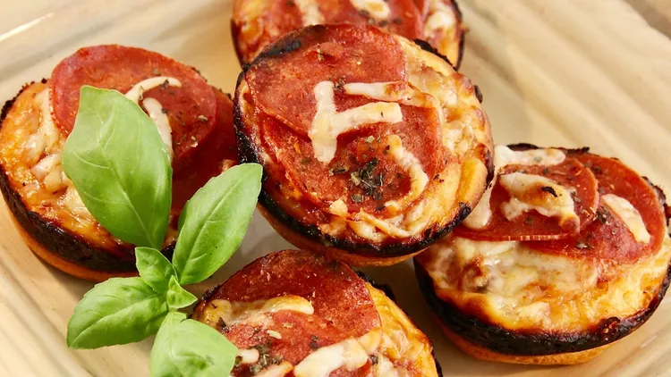

Pepperoni Pizza Muffins

Description
These pizza muffins are the perfect bite sized treat to dig into while watching the superbowl, and they are extremely easy to make. This recipe cannot be topped, unless you remembered the pepperoni of course ;)
Ingredients
- cooking spray
- 1 (10 ounce) can refrigerated buttermilk biscuit dough
- 10 tablespoons pizza sauce (such as Ragu® Homestyle)
- 10 slices pepperoni
- 10 tablespoons shredded mozzarella cheese, or as needed
- muffin baking sheet
Directions
- Preheat the oven to 425 degrees F (220 degrees C). Spray 10 muffin cups with cooking spray
- Press biscuits, one at a time, between hands to flatten. Place each flattened biscuit in a muffin cup; press into bottom and up sides of cup. Set aside for dough to settle and slightly rise, about 5 minutes; lightly press dough into cups if needed
- Spoon 1 tablespoon pizza sauce into each dough cup; top each with 1 slice pepperoni and 1 tablespoon mozzarella cheese
- Bake in the preheated oven until pizza muffins are lightly browned and cheese is melted, about 10 minutes. Remove from tin and place on a cooling rack to cool slightly, about 5 minutes